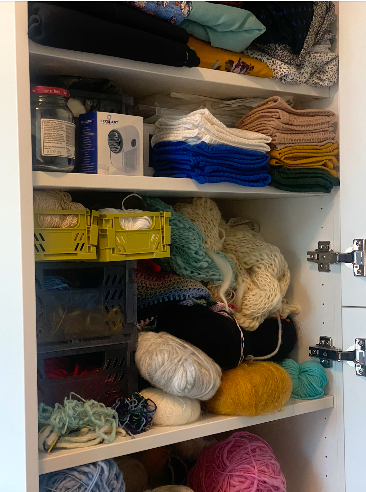
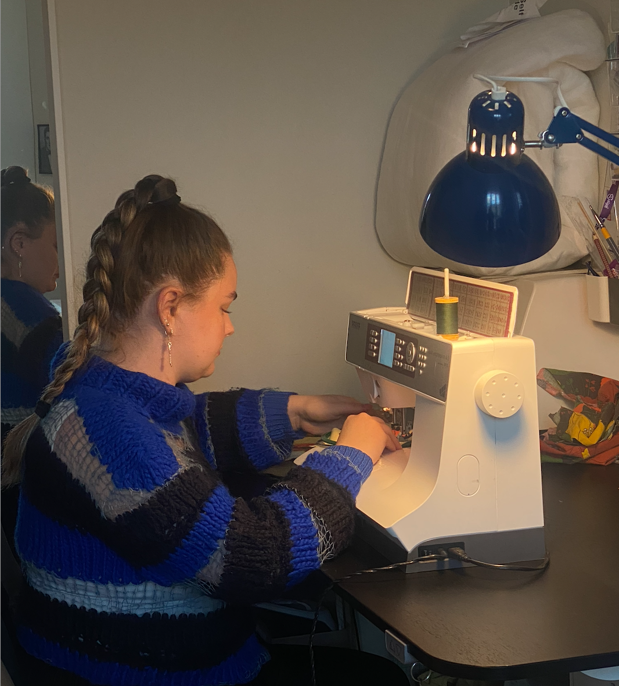
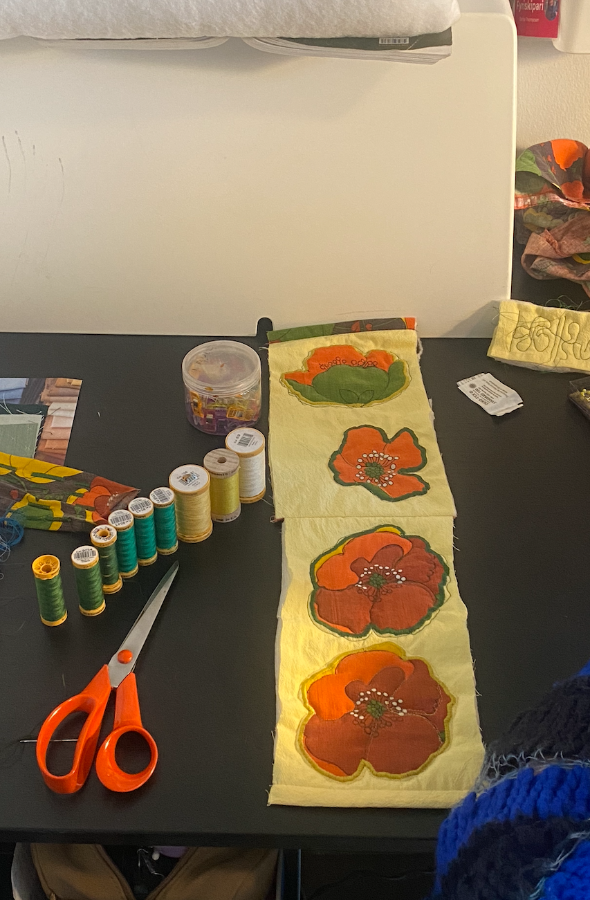
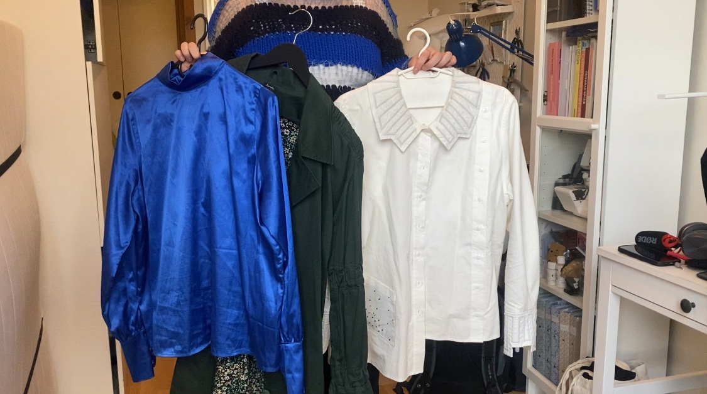

PERSON MED PASION
"Det giver mig en form for livsglæde"
Sarita Thomassen, 26 år, er født og opvokset på Færøerne, men bor nu i København, hvor hun studerer til tekstilformidler. Hendes store passion er at sy tøj og tasker, og hendes designs bærer præg af både færøsk kultur og moderne stil. Sarita elsker at eksperimentere med materialer og farver, og hun fokuserer på bæredygtighed ved ofte at genbruge tekstiler. Hun drømmer om en dag at skabe sit eget brand, hvor hendes håndlavede kreationer kan inspirere og glæde andre.

KREATIV DESIGNER MED FÆRØSKE RØDDER



